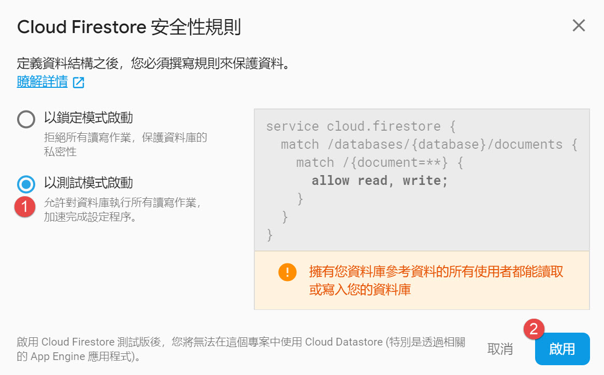

Cloud Firestore
Firebase 是 Google 推出的雲端服務。
有很多專為 Modile 或 Web 設計的功能，
這篇是使用其中 Cloud Firestore 功能的心得，
Cloud Firestore 是 NoSQL 型態的資料庫，
目前 Cloud Firestore 還是 Bate 版，不過非常好上手。
首先當然是到 Firebase 網站註冊帳號囉，
到 https://console.firebase.google.com/ 可以直接用 google account 登入。
選擇新增專案，然後決定專案名稱和計費區域，最後選擇建立專案
專案建立好之後，來建立database，記得是選用 Cloud Firestore
暫時啟用測試模式

firebase initializeApp
都建立好之後，我們開一個簡單的網頁來測試
首先必須在檔案中加入
1 | <script src="https://www.gstatic.com/firebasejs/5.2.0/firebase-app.js"></script> |
並且初始化 firebase
1 | firebase.initializeApp({ |
初始化要輸入的projectId、apiKey可以在下圖找到
而 authDomain 為 [projectId].firebaseapp.com
例如 projectId 是 demoWeb，則 authDomain 就是 deomWeb.firebaseapp.com
新增與修改資料
接著新增一筆資料試試看，
加入以下程式碼
1 | db.collection("users").add({ |
上面範例會建立一個 users 的集合，並且加入一筆資料，
並且會回傳代表此資料唯一的ID，
若是ID想要自己取，可以使用以下程式碼
1 | db.collection("users").doc("1234").set({ |
而此方式也是修改資料時使用的方式，只要相同 ID 再次 set 資料就會更新。
取得資料
事實上 db.collection(“users”).doc(“1234”) 取到的是 doc 的參考
你可以使用此參考的 get 方法取得資料或是檢查資料是否存在，如下
1 | var docRef = db.collection("users").doc("1234"); |
刪除資料
最後你也可以將資料刪除
1 | var docRef = db.collection("users").doc("1234"); |
如果只想刪除單一欄位，可以將此欄位的值設定成 firebase.firestore.FieldValue.delete()，
並呼叫參考的 update 方法，
1 | var docRef = db.collection("users").doc("1234"); |
即時偵測
我們也可以及時偵測資料的改變
在參考的物件設定 onSnapshot 事件，就可以在物件改變之後即時更新，
參考以下程式碼，我們將偵測整個 collection，只有內容有改變，就會重新顯示
1 | var collectionRef = db.collection("users") |
最後，db.collection(“users”).doc(“1234”) 可以簡化成 db.doc(“users/1234”)
一樣可以取得 doc 的參考。
以上是 Cloud Firestore 的簡單介紹，使用上還滿容易的。
範例程式碼